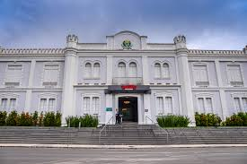
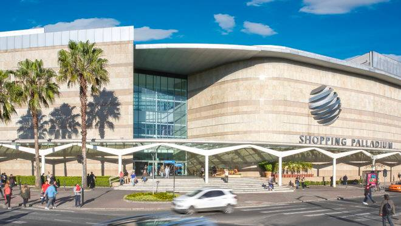

Data: 29/04/2024
Seja bem vindo ao guia de turismo.
Shoppings de Curitiba
- Shopping Curitiba: R. Brg. Franco, 2300 - Centro, Curitiba - PR, 80250-030
- Shopping Palladium: Av. Pres. Kennedy, 4121 - Portão, Curitiba - PR, 80610-010
- Shopping Novo Batel: R. Cel. Dulcídio, 517 - Batel, Curitiba - PR, 80420-170
Shopping Curitiba
Localizado na região do Batel, o Shopping Curitiba conta com mais de 140 lojas em segmentos como informática, beleza e vestuário. Além disso, o local possui 20 restaurantes e 6 salas de cinema de última geração.
Shopping Palladium
Localizado na região de Portão, o Shopping Palladium conta com mais 350 lojas em segmentos como vestuário, informática e alimentação. Além disso, o local é o único com cinema IMAX Digital, exibindo filmes em 2D e 3D.
Shopping Novo Batel
Localizado na região do Batel, o Shopping Novo Batel conta com 100 lojas em segmentos como cama, mesa e banho, vestuário e eletrônicos. Além disso, o local possui 3 teatros: Fernanda Montenegro, João Luiz Fiani e Paulo Autran.
| palladium | novo-batel | curitiba |
|---|---|---|
| palladium | novo batel | curitiba |